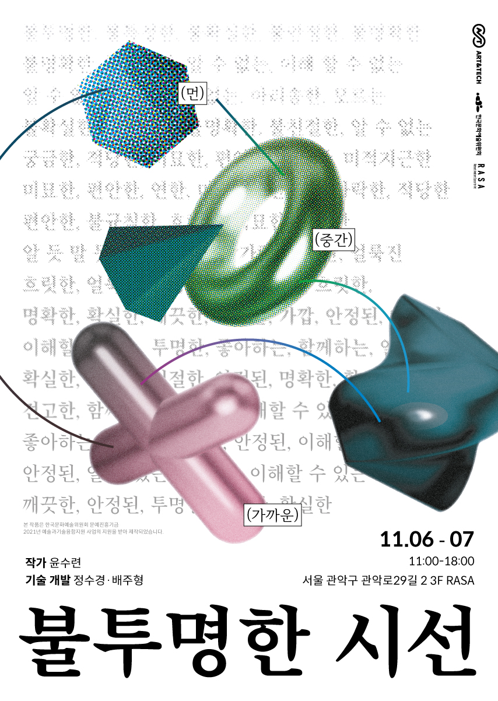
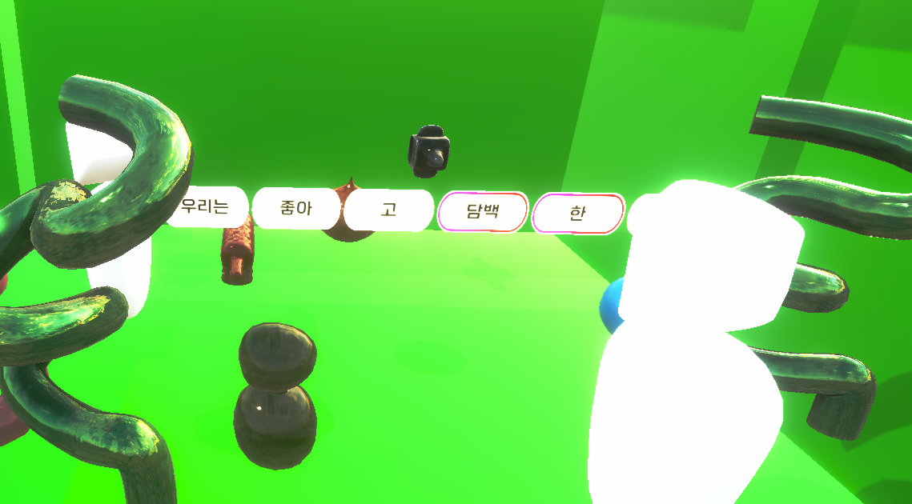

Opaque gaze


개발기간: 2021.7.20 ~ 2021.11.6 (110일)
개발환경: Unity URP / GitHub/Oculus Quest2
주요 역할: 기획 및 3D 모델링 제작, Particle System을 이용해 비주얼 제작, 가상환경 구성
기여도: 3인 팀 프로젝트(40%)
제작동기: 실제 공간과 동일한 크기의 공간이 다시 VR 상에서 보여진다. 이 공간은 전시장과 같은 공간으로 보이지만, HMD 라는 ‘막'을 통해 전혀 다른 시선으로 바라보게 된다. 본다는 것은 언제나 투명할 수 없는 것이다. HMD로 인해 완전히 차단된 시야의 시선은 전시 제목인 ‘불투명한 시선＇이다.
전시장을 돌아다니며 물리적인 거리가 자연스럽게 멀어지기도 가까워지기도 할 것이다. 그 거리에 따라 단어들이 눈 앞에 펼쳐지게 된다. 또한 자연스럽게 공간의 색이 변하게 된다. 시시각각으로 변화하는 색과 단어들은 관계의 거리감을 시각적으로 보여주는 장치이다.


거리와 거리감 사이에서 다름을 유지하는 방법―또는 방법(론) 없음
콘노 유키
거리와 거리감은 엄연히 다른 것이다. 둘은 서로 긴밀하게 관계하는 경우도 있지만 상관하지 않은 경우 또한 있다. 예를 들어 옆에 있어도 거리감을 느낄 사람이 있는 한편, 멀리 떨어져 있는데도 마음이 통하는 사람이 있다. 각각의 경우에서 사람과 사람 간의 물리적 거리를 측정하여 몇 미터 이상 거리가 있으면 거리감을 느낀다는 (등)식의 분석이 나온다면 그 결과는 둘이 각각에 대해, 나아가 아무것도 모르는 사이에 나온 것에 불과하다. 반대로 친한 사이는 거리가 있어도 그 관계가 유지될 수 있다. 거리감은 지금 현재의 물리적 위치에 따라 형성되지 않는다. 바꿔 말해 지금 현재를 받치는 기억, 신체적 감각, 인식 능력, 개인적 성향에 따라 도출되는 것이다. 이런 판단의 종합으로 나온 거리감은 그야말로 가까움과 멂의 기준 또한 정식화하기 어렵게 한다.
그렇다면 거리감은 어떻게 인식될까. 우리에게 먼저 공간적으로 경험된다. 예를 들어 어떤 사람을 10m 거리를 두고 만날 때, 우리는 그 거리를 통해 거리감을 느낀다. 그런데 만약에 그들이 서로 모르는 사이였다면, 우리는 거리감을 애초에 느끼지 않을 것이다. 다른 한편 그들이 다른 나라에 살고 있어도 한때 친했던 사이라면 마음만큼은 거리감을 느끼지 않을 것이다. 뿐만 아니라 공간적 경험에 시간적 경험이 자리한다. 기억 속에서 일치하는 듯하다 엇비슷한 장면처럼, 우리는 시공간적으로 서로 다른 위치에 있는 것끼리 맺는 기묘한 관계가 거리감이다. 거리와 거리감은 다른 것이다―더 정확히 말하자면 거리와 거리감은 둘 다 다름에 근거한다. 그런데 거리와 거리감은 둘 다 다른 이곳과 저곳 사이에 놓여 있지만, 측정할 수 있는지 없는지에 따라 차이가 있다. 가까운 사이의 관계이지만 나와 다른, 어디서 본 장면 같지만 이곳 아닌, 아는 듯하지만 내가 모를 수도 있는 경우에 생기는 거리감은 수치화되고 계량화된 거리에서 도출되지 않는다.
VR은 거리감과 거리를 경험하는 매체인 측면에서 볼 필요가 있다. 그것은 우리의 인식이 통제당하여 종속되는 수단이 아니다. 윤수련의 이번 개인전 <불투명한 시선>에서 상대방과 나는 HMD(Head mounted Display) 장치를 통해서 의사소통을 주고받는다. 장치 너머 실제 전시 공간과 시각적으로 똑같이 구현한 곳에서 감상자는 거리에 따라 등장하는 형용사와 동사를 본다. 형용사와 동사는 거리감에 대해 인간이 느끼는 감각을 언어화 한 것인데 유저는 이중에서 선택하여 문장 구조를 만든다. 알고리즘에 기반하여 상대방과 나 사이의 거리는 언어와 색상 변화를 통해 묘사되면서 감상자인 사용자로 하여금 거리감을 인지하도록 한다. 그런데 이 작은 가상 공간에서 벌어지는 일련의 일들은 얼마나 거리감에 대한 인식이 측정 불가능하고 헤아릴 수 없는 것임을 보여준다. 시각적으로 구현된 공간에서 벌어지는 행위는 나와 상대방 사이에, 일치하기만 하지 않는 언어 선택 사이에, 물리적 공간과 가상적으로 구현된 공간 사이에, 그리고 궁극적으로는 VR의 경험을 하기 전과 후라는 시간적 사이에 거리감을 계속 만든다. 설령 가상적 공간에서 알고리즘으로 자동 출력되는 언어를 통해서 거리감이 증명된다고 하더라도, 장치를 벗었을 때 우리는 그러한 기계적 인식이 꼭 감각을 투명하게 보여준다고 생각하지 않을 것이다.
그런 의미에서 HMD 장치는 우리에게 투명한 시선을 제공하지 않는다. 작성된 알고리즘에 따라 출력되는 거리감에 대한 묘사와 차단된 시선으로 마주보는 상대방을 보면서 문장을 함께 만드는 일은 거리를 측정하기에는 장식적이고 거리감을 느끼기에는 (시선이 차단되어) 가깝지 않은 사이이다. 우리가 경험하는 거리와 거리감의 관계는 장치를 통해서 명료하게 보이지 않는다. 거리감이란 오히려 물러선 정보들―위치, 누구인지, 시간의 간극 등―덕분에 유지되는 다름이다. 아까까지 언어나 색상 변화로 거리감에 대해 느꼈다면, 장치를 벗고 지금 이 공간은 어떻게 또는 어느 만큼 거리감이 있는 것일까―거꾸로, 우리가 그렇게 인지한 거리감은 계량 가능한 거리의 다른 형태에 지나지 않을까. 이런 물음은 오늘날 도처에서 빈번히 듣는 ‘정상’을 향하기도 한다. 측정된 체온과 정상이 건강으로 증명되는 것과 달리, 거리감은 거리라는 측정 가능한 기준에 얽매이지 않는다.
관객은 장치를 벗고 나서 전시장을 떠날 때 서로에 대한 관계를 묘사한 문장이 출력된 종이를 받는다. 가상적으로 구현된 공간에서 이루어진 경험의 기록은 실제 공간에서 유리된 것이다. 그런데 이 유리된 기록은 거리감에 대한 우리의 생각을 감각으로서 포착하는 단서가 된다. 이번 전시에서 작가는 기술을 통해서 거리감을 증명하는 대신 그 ‘측정 가능한 기준’이라는 심급을 건드린다―해명되지 않는 감각을 통해서.
전시 노트
윤수련
나와 타자 사이의 거리는 동일한 선상에 존재 할 수 없기 때문에 어쩔 수 없이 그 틈이 벌어지게 된다. 틈으로 인해 서로에게 투명한 관계는 불가능하다.
나의 시선으로 보이는 것이 과연 대상의 전부일까? 우리는 대상을 투명하게 바라볼 수 있는가?
모든 시선은 불투명하다. 이 불투명한 시선의 너머에는 어떤 것이 있을지 궁금했다.
전시장에 들어서면, 텅 빈 공간에 유기체가 흘러내리고 있다.
실제 공간과 동일한 크기의 공간이 다시 VR상에서 보여진다. 이 공간은 전시장과 같은 공간으로 보이지만, HMD라는 ‘막’을 통해 전혀 다른 시선으로 볼 수 있다. 본다는 것은 언제나 투명할 수 없는 것이다. HMD로 인해 완전히 차단된 시야의 시선은 전시 제목인 ‘불투명한 시선’ 이다.
나와 타자만 있는 공간에서 VR을 시작하자 우리 사이에 보이지 않았던 선이 보인다.
전시장을 돌아다니며 물리적인 거리가 자연스럽게 멀어지기도 가까워지기도 할 것이다. 그 거리에 따라 단어들이 눈 앞에 펼쳐지게 된다. 또한 자연스럽게 공간의 색이 변하게 된다. 시시각각으로 변화하는 색과 단어들은 관계의 거리감을 시각적으로 보여주는 장치이다.
주어진 단어들은 내가 생각하는 거리감에 대한 단어들이다. 멀고 가까워짐에 따라 느껴지는 단어를 나열했다. 이 단어의 뜻을 나와 완벽하게 똑같이 생각하는 사람은 없을 것이다. 아주 작은 차이라도 그 의미의 차이가 발생하게 되고 그러한 차이들 또한 불투명함을 만들어 낸다.
나와 타자 사이의 거리가 있음으로써 우리는 서로를 바라볼 수 있다. 이 공간 안에서 나와 당신만의 관계에 몰입하여 단어를 모으다 보면 우리의 관계는 어떤 관계인가?에 대해 고민하게 된다.
이렇게 서로 모은 단어들을 이용해 문장을 만들게 된다.
“ 우리는 [ ] 관계다 ”
우리는 어떤 관계일까? 서로 각자가 생각하는 우리의 관계에 대해 고민해보고, 앞 뒤의 단어를 배치하여 문장을 완성하게 된다. 이 단어들은 어떤 조사를 선택하느냐에 따라 서로 상충할수도 서로 연결될 수도 있다. 내가 생각하는 우리의 관계와 상대방이 생각하는 우리의 관계의 틈 사이에서 비로소 완성된 문장에서 볼 수 있다.
문장을 다 만들고 HMD를 벗으면 서로가 만든 문장을 가져갈 수 있다. 한 줄의 문장을 통해 우리의 관계에 대해 전부를 알 순 없지만 어렴풋하게 만져지는 것으로 남겨진다.
본 작품은 한국문화예술위원회 문예진흥기금 2021년 예술과기술융합지원 사업의 지원을 받아 제작되었습니다.